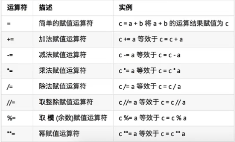
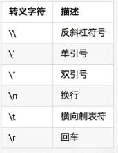
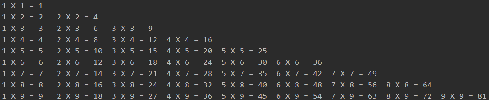

- 顺序 —— 从上到下，顺序执行
- 分支 —— 根据条件判断，决定代码的分支
- 循环 —— 让特定代码执行
while 条件(判断 计数器 是否达到 目标次数):
条件满足时，做的事情1
条件满足时，做的事情2
……
处理条件(计数器 + 1)
注：while语句以及缩进部分是一个 完整的代码块

- break 某一条件满足时，退出循环，不再执行后续重复的代码
- continue 某一条件满足时，不退出循环，不执行后续重复的代码
注：break 和 continue 只针对当前所在循环有效
while 条件1:
条件1满足时，做的事情1
条件1满足时，做的事情2
……
while 条件2:
条件2满足时，做的事情1
条件2满足时，做的事情2
……
处理条件(计数器 + 1)
处理条件(计数器 + 1)
- \t 在控制台输出一个 制表符，协助在输出文本时 垂直方向 保持对齐
- \n 在控制台输出一个 换行符
转义字符表：

1 row = 1
2 while row <= 9:
3 col = 1
4 while col <= row:
5 print("%d X %d = %d" % (col, row, row * col), end="\t")
6 col += 1
7 print("")
8 row += 1输出结果：
